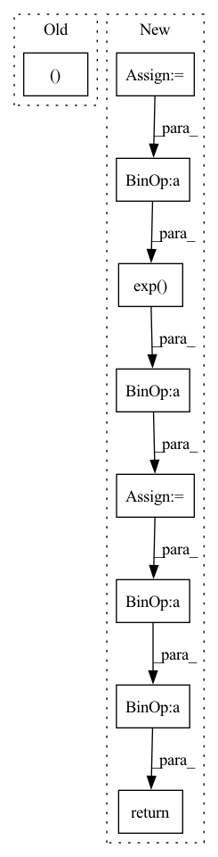

Pattern ID :226

Before Change
// boxes = boxes * self.scale
// // decode landmarks
landms = landms.reshape((43008, 10))
// pre = landms.reshape((-1, 10))
// landms = torch.cat((
// priors[:, :2] + pre[:, :2] * variances[0] * priors[:, 2:],
After Change
人脸检测后处理部分只能batch_size为1
priors = self.prior_data
variances = self.cfg["variance"]
// decode boxes
loc = loc.reshape((43008, 4))
boxes = torch.cat((
priors[:, :2] + loc[:, :2] * variances[0] * priors[:, 2:],
priors[:, 2:] * torch.exp(loc[:, 2:] * variances[1])), 1)
tempA = boxes[:, 0:2]
tempB = boxes[:, 2:4]
boxes = torch.cat((tempA - tempB/2, tempA + tempB/2), 1)
conf = conf.reshape((43008, 2))
scores = conf[:, 1]
return boxes.reshape(1, 43008, 1, 4), scores.reshape(1, 43008, 1)
def test(self, boxes, scores):
boxes = boxes.unsqueeze(0)
In pattern: SUPERPATTERN
Frequency: 4
Non-data size: 9
Instances
Fragment ID: 1691545
Project Name: lihaoxiang1989/tensorrt-cv
Commit Name: defa136eb68db8c102bf6fd06339776e0a40d83e
Time: 2021-06-27
Author: hxl.colin@gmail.com
File Name: Retinaface/main.py
M Class Name: MyModel
N Class Name: MyModel
M Method Name: postprocess(3)
N Method Name: postprocess(5)
M Parent Class: nn.Module
N Parent Class: nn.Module
M File Name: Retinaface/main.py
N File Name: Retinaface/main.py
M Start Line: 207
M End Line: 252
N Start Line: 227
N End Line: 242
'>
Before Change
def forward(self, g_s, f_s, g_t, f_t):
trans_loss_s, domain_acc_s = self._single_domain_forward(g_s, f_s, domain=1)
trans_loss_t, domain_acc_t = self._single_domain_forward(g_t, f_t, domain=0)
self.grl.step()
self.domain_discriminator_accuracy = 0.5 * (domain_acc_s + domain_acc_t)
return 0.5 * (trans_loss_s + trans_loss_t)
After Change
def forward(self, g_s, f_s, g_t, f_t):
f = torch.cat((f_s, f_t), dim=0)
g = torch.cat((g_s, g_t), dim=0)
g = F.softmax(g,dim=1).detach()
h = self.grl(self.map(f, g))
d = self.domain_discriminator(h)
d_label = torch.cat((
torch.ones((g_s.size(0), 1)).to(g_s.device),
torch.zeros((g_t.size(0), 1)).to(g_t.device),
))
weight = 1.0 + torch.exp(-entropy(g))
batch_size = f.size(0)
weight = weight / torch.sum(weight) * batch_size
self.domain_discriminator_accuracy = binary_accuracy(d, d_label)
return self.bce(d, d_label, weight.view_as(d))
class RandomizedMultiLinearMap(nn.Module):
'>
Fragment ID: 1691560
Project Name: thuml/transfer-learning-library
Commit Name: 8477111b23336e7dd2d349a4b35b969240ff5871
Time: 2020-04-12
Author: 13126830206@163.com
File Name: dalib/adaptation/cdan.py
M Class Name: ConditionalDomainAdversarialLoss
N Class Name: ConditionalDomainAdversarialLoss
M Method Name: forward(5)
N Method Name: forward(5)
M Parent Class: nn.Module
N Parent Class: nn.Module
M File Name: dalib/adaptation/cdan.py
N File Name: dalib/adaptation/cdan.py
M Start Line: 86
M End Line: 90
N Start Line: 87
N End Line: 100
'>
Before Change
self.domain_discriminator_accuracy = None
def forward(self, g_s, f_s, g_t, f_t):
trans_loss_s, domain_acc_s = self._single_domain_forward(g_s, f_s, domain=1)
trans_loss_t, domain_acc_t = self._single_domain_forward(g_t, f_t, domain=0)
self.grl.step()
self.domain_discriminator_accuracy = 0.5 * (domain_acc_s + domain_acc_t)
After Change
def forward(self, g_s, f_s, g_t, f_t):
f = torch.cat((f_s, f_t), dim=0)
g = torch.cat((g_s, g_t), dim=0)
g = F.softmax(g,dim=1).detach()
h = self.grl(self.map(f, g))
d = self.domain_discriminator(h)
d_label = torch.cat((
torch.ones((g_s.size(0), 1)).to(g_s.device),
torch.zeros((g_t.size(0), 1)).to(g_t.device),
))
weight = 1.0 + torch.exp(-entropy(g))
batch_size = f.size(0)
weight = weight / torch.sum(weight) * batch_size
self.domain_discriminator_accuracy = binary_accuracy(d, d_label)
return self.bce(d, d_label, weight.view_as(d))
class RandomizedMultiLinearMap(nn.Module):
'>
Fragment ID: 1691547
Project Name: thuml/transfer-learning-library
Commit Name: 6dfc8e293ca2cbc4d116dc8ed0a6ef176dff0d06
Time: 2020-04-12
Author: 13126830206@163.com
File Name: dalib/adaptation/cdan.py
M Class Name: ConditionalDomainAdversarialLoss
N Class Name: ConditionalDomainAdversarialLoss
M Method Name: forward(5)
N Method Name: forward(5)
M Parent Class: nn.Module
N Parent Class: nn.Module
M File Name: dalib/adaptation/cdan.py
N File Name: dalib/adaptation/cdan.py
M Start Line: 86
M End Line: 90
N Start Line: 87
N End Line: 100